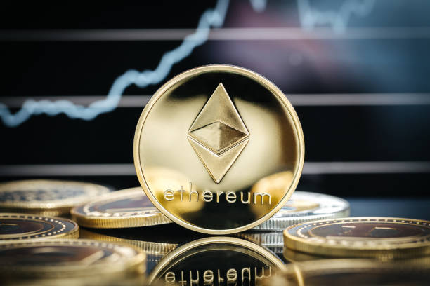

Tecnologia nueva que permite compartir un ledger digital entre los ususrios de un network de forma segura!
Tambien llamados tokens o Coins son la representacion del Valor dentro de un Blockchain
Son las Cryptomonedas de los projectos de blockchain que no son Bitcoin y los BTC Maxi les dicen ShitCoins!
Son Networks donde se puede construir DAPs, L2's o diferentes protocolos que tienen cierta utilidad y pueden tener sus propios tokens
ETH
 Go to ethereum on Coinmarketcap Es una Super Coin 2nda en Capitalizacion luego de BTC, que se usa en Ethereum Blockchain que es un L1 y se diferencia
del resto por su amplia adopcion e implementacion soportando multiples projectos L2's y usa prueba de Stake para Validar transacciones^2
Dentro de las Top 8 tenemos:
SOL:
Go to Solana on Coinmarketcapes un Exito como coin de Solana L1 non EVM. Es rapida, escalable, descentralizada y economica lista para adopcion de
Masas que usa Pruba de Historia en su mecanismo de consenso pero a veces presenta fallas o congestion
ADA:
Es una incognita y maneja la governabilidad de Cardano, L1 non EVM. Es mas o menos rapida, escalable, descentralizada y economica
DOGE:
Es una sub meme Coin ready to dumpForkeada de Litecoin
BNB:
Es una Coin de Binance y como EVM L1 tiene muchos usos como AI , Defi pero es muy Centralizada y poco Escalable
StableCoins:
Son las Tokens que representan Monedas Fiat emitidas por paises como el Dolar (USD) o el Euro, Se usan Defi y son muy Centralizadas
Others:
dentro del Total 3 representan projectos Nuevos de baja Capitalizacion y creciente adopcion
go to top{kind=link}